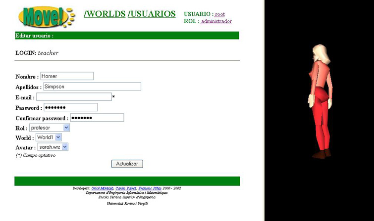

4.2 Modificar los datos de un usuario existente
En la pantalla de edici�n de las propiedades de un usuario nos encontramos con lo siguiente:

En el margen izquierdo podemos ver el perfil del usuario,
- Login
- Nombre
- Apellidos
- Password
- Rol
y dos nuevas propiedades que aun no hemos visto:
- World:
- Avatar: apariencia que tendr� el usuario dentro del entorno 3D del MOVE!
En la parte derecha de la pantalla podemos ver una pre-visualizaci�n del avatar (humanoide 3D) que hay actualmente seleccionado en el campo Avatar
A la hora de modificar los datos de un usuario tendremos que tener en cuenta una serie de cosas:
- el login es inmodificable
- todos los campos son obligatorios, excepto el campo E-mail
- los valores de los campos Password y Confirmar Password deberan coincidir
Una vez realizadas las modificaciones oportunas de los datos del usuario y comprobado que efectivamente son correctas, deberemos pulsar el bot�n y entonces los nuevos datos del usuario se guardar�n en la Base de Datos de MOVE!.